Settings → Gateway → Social listening: Zhihu, Weibo, Douyin and Xiaohongshu (issue #1362)
Taken by web/tests/listening-accounts.spec.ts against a fake client API, desktop (Desktop Chrome) and phone (Pixel 7), light and dark (UI_CHECK, UI_THEME). Account names are made up. Weibo and Douyin wear the same cards. Retaken after review round 1 of PR #1364: the consent card quotes xiaohongshu-mcp #930 as it reads (a security page at the first search after three read-only calls), and the phone shows each card whole.
Zhihu read as its account; Xiaohongshu off until its consent card

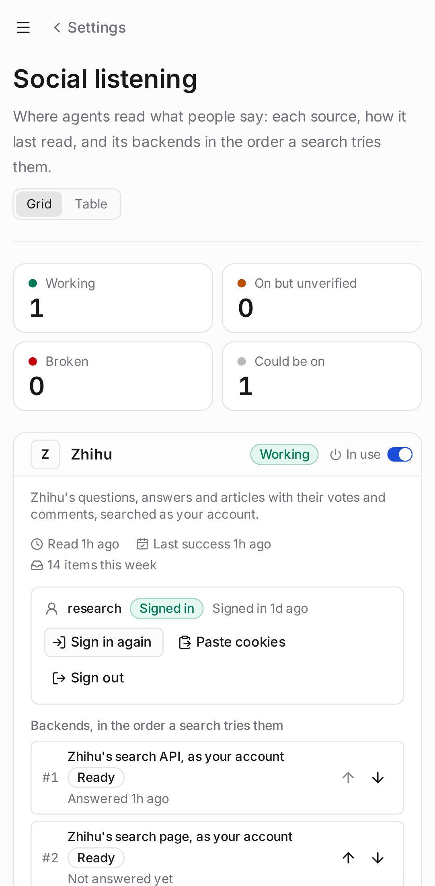
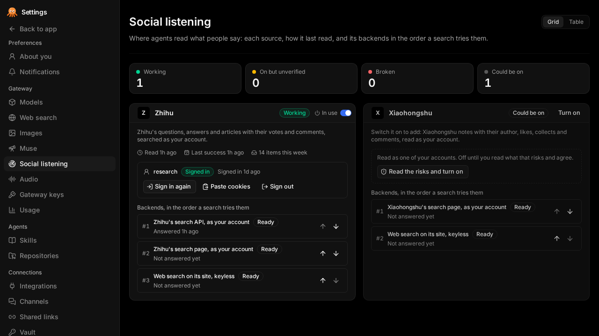
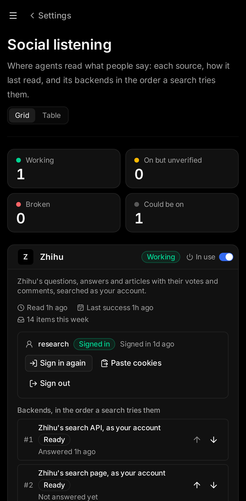
Zhihu's backends in order: its search API, its own search page, the web search on its site (scrolled, so the phone shows them all)
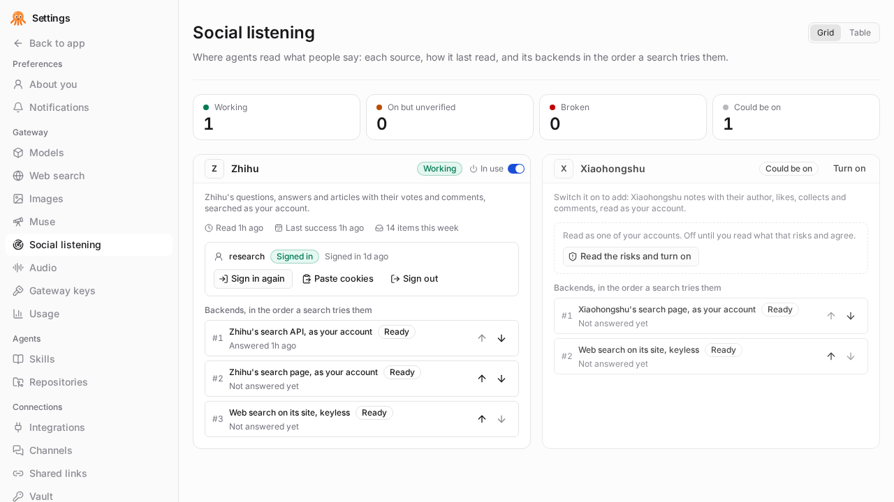
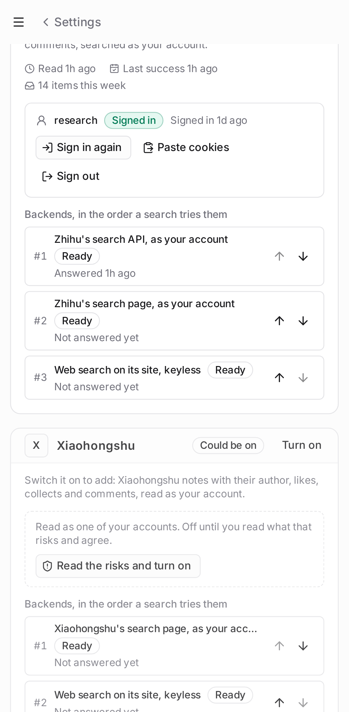

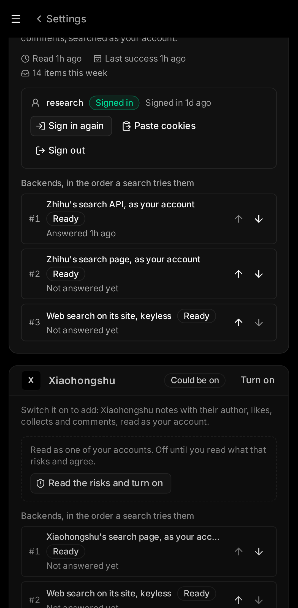
Xiaohongshu's card: its consent card first, its search page then the web search (scrolled)

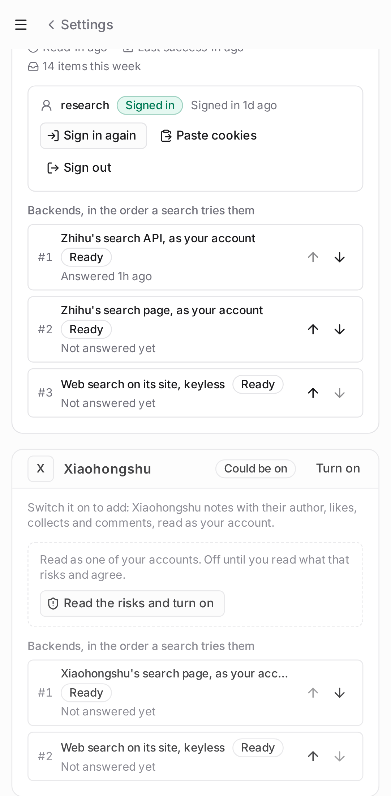

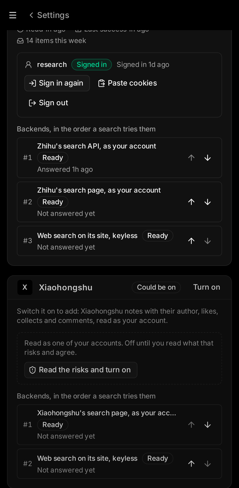
Xiaohongshu's consent card: its ban reports, its one web session an account, its pace and its stops
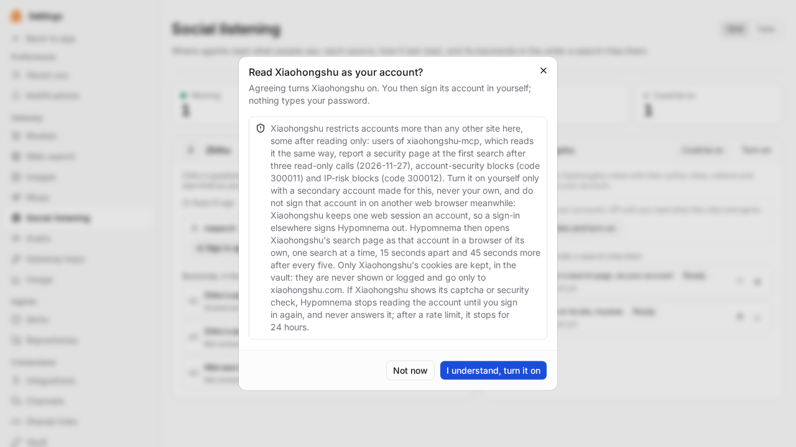
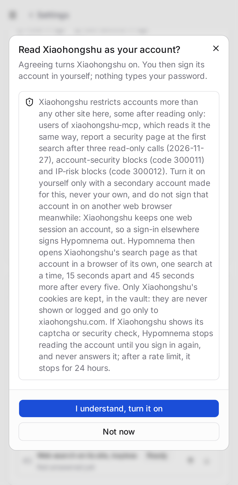
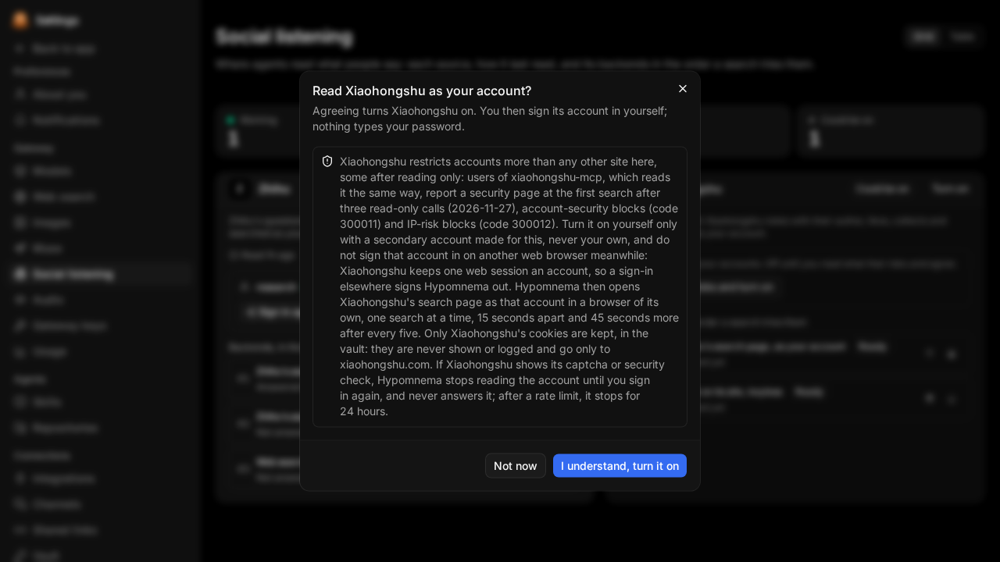
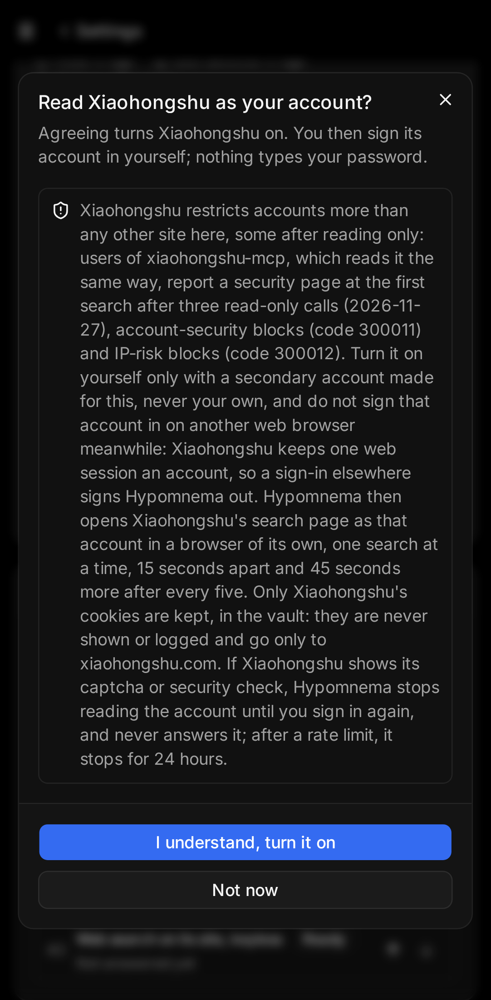